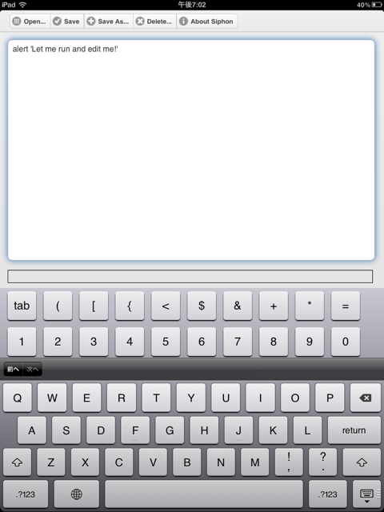

Siphon: CoffeeScript Programming Environment

Siphon is a CoffeeScript Programming Environment, especially for iPad-like Tablet.
Enjoy Siphon by clicking here!
Features
- Real-time compiling same as the CoffeeScript site
- Software keyboard enhancement with flick gesture
- jQuery Mobile look and feel
- "File" storage
- Offline application
- Available libraries which you can use for programming
Tips
- Inputting single or double quatation: You can input single or double quatation by flicking comma(') or period(.) key on software keyboard respectively.
- Missing keys: Buttons at the upper row are also flickable. Touch and hold, then you will see a different key.
- Scrolling text pane: You can scroll by moving two fingers.
Action Items
- "Require" support
- Prelude library in "Smooth CoffeeScript"
- WebSockets library - ws.coffee (MIT)
- QuickCheck library - qc.js (2009 / MIT)
- Canvas/SVG libray
- Pretty printing
- Editor enhancement
- Code completion
Change log
2011/10/16 - Initial release
2011/11/08 - version 0.2.0: jQuery Mobile look and feel. flickable soft keyboard.